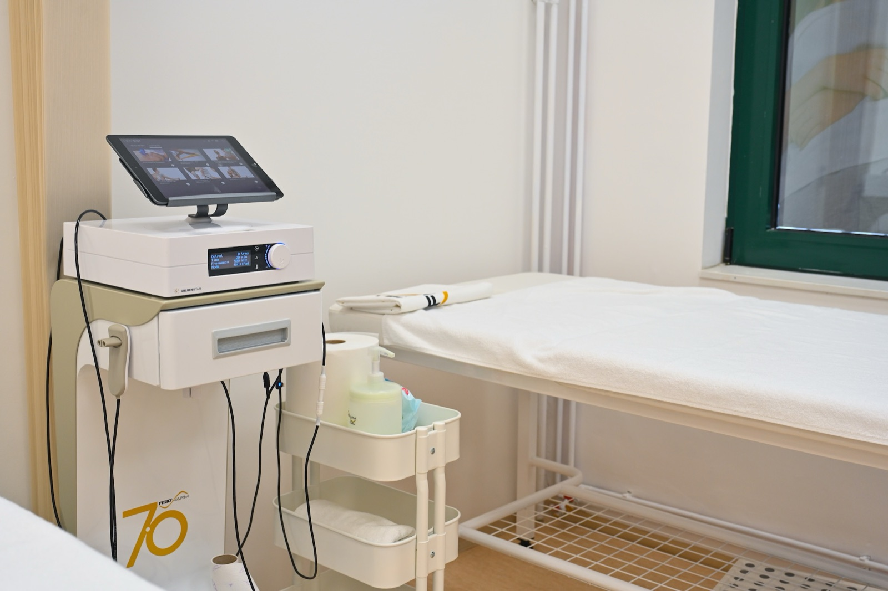
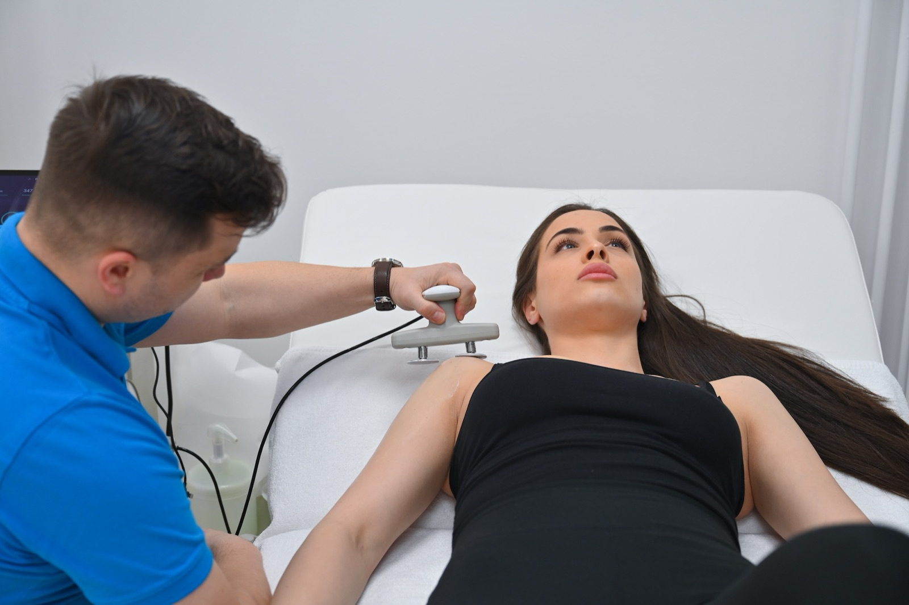
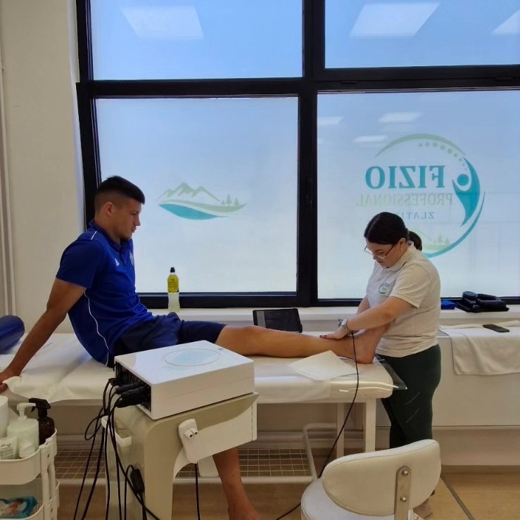

TECAR terapija — dubinska toplota koja leči iznutra
Kada vas tetiva ili leđa muče već nedeljama, a led i tablete više ne pomažu, telu treba dublji „okidač" da pokrene sopstveni oporavak. TECAR (kapacitivno‑rezistivna radiofrekvencija, CRet) stvara prijatnu, duboku toplotu unutar samog tkiva — ne na površini kože — i tako ubrzava krvotok, opušta napete mišiće i pomaže oštećenoj tetivi da brže zaceli. Zato ovaj tretman vrhunski sportisti redovno koriste između takmičenja: kratko, prijatno, a oporavak je vidljiv već posle prve dve‑tri sesije.

Kako izgleda tretman
Gel i ručni aplikator
Na kožu se nanosi tanak sloj provodnog gela. Terapeut zatim metalnim aplikatorom polako kruži po regiji koju lečimo — slično ultrazvuku, samo prijatnije.
Duboka, prijatna toplota
Osećaj nije „pečenje" na koži — toplota se stvara unutar tkiva, kao da se mišić zagreva iznutra. Intenzitet se podešava uživo: jasno toplo, ali nikada neugodno.
Opuštanje i olakšanje
Većina pacijenata se na stolu opusti i priča koliko im je prijatno. Bol u tetivi ili leđima često je primetno manji odmah po izlasku iz sale.
Najbolje indikacije za TECAR
Ako se prepoznajete u nečemu ispod, TECAR je vrlo verovatno pravi izbor — često ga kombinujemo i sa drugim terapijama radi bržeg rezultata.
Sportske povrede i bol u tetivama
- Teniski i golferski lakat (lateralni i medijalni epikondilitis)
- „Skakačko koleno" — patelarna tendinopatija (oštećenje tetive ispod čašice)
- Bol u Ahilovoj tetivi (Ahilova tendinopatija)
- Problemi sa rotatornom manžetnom ramena i „smrznuto rame" (adhezivni kapsulitis)
- Istegnuća i nagnječenja mišića — oporavak posle udarca ili povrede
- Bol u peti i tabanu (plantarni fasciitis)
- Brz oporavak između treninga i takmičenja
Hronični bol i oporavak
- Bol u krstima (lumbalgija) i bol koji „beži" u nogu (išijas)
- Ukočen vrat, napetost u trapezima, glavobolja od vrata
- Bol vezan za diskus u vratnom ili slabinskom delu (uz postavljenu dijagnozu)
- Bol u kuku i trohanterni burzitis
- Ožiljci i priraslice posle operacije (meniskus, prednja ukrštena, rame)
- Otok i ukočenost zgloba posle povrede ili gipsa
- Hronična ukočenost mišića posle dugog sedenja za stolom


Koliko traje i kako se planira
Polazni okvir — sve se podešava prema dijagnozi, intenzitetu bola i preporuci lekara kada je potrebna.
- Trajanje sesije
- 20–40 minuta po regiji
- Režim rada
- kapacitivni i rezistivni — biramo tokom sesije
- Intenzitet
- jasna, prijatna toplota — nikada peče
- Akutne tegobe
- 2–3 puta nedeljno
- Hronične tegobe
- 1–2 puta nedeljno
- Tipičan paket
- 6–12 tretmana
- Prvi rezultati
- obično posle 2–3 sesije

Šta da očekujete
Obucite nešto što se lako podiže ili pomera sa bolne regije — terapeutu treba slobodan pristup koži, jer se gel nanosi direktno na mesto tretmana. Tokom sesije ćete osetiti kako se područje sporo zagreva iznutra; mnogi opisuju osećaj kao „masaža koja stiže do dubine". Posle tretmana koža može biti blago rumena 10–20 minuta — to je dobar znak da je krvotok pojačan. Većina pacijenata sa tendinopatijama ili hroničnim bolom u leđima oseti vidno olakšanje već posle 2–3 sesije, a stabilan oporavak gradi se kroz seriju od 6–12 tretmana.
Kada TECAR nije za vas
Molimo vas da nam unapred kažete ako: imate pejsmejker ili bilo koji ugrađeni elektronski uređaj, ste trudni, lečite aktivni malignitet u zoni tretmana, imate povišenu temperaturu ili akutnu infekciju, tešku perifernu arterijsku bolest, nedavno preboleli duboku vensku trombozu (DVT), imate metalne implante u samoj regiji koju treba lečiti (zglobne proteze su obično u redu — uvek pitamo), znatno oslabljen osećaj kože na tom mestu, ili otvorene rane. Pre prve sesije postavljamo nekoliko kratkih pitanja i, kada je potrebno, tražimo dozvolu vašeg lekara — bezbednost je uvek na prvom mestu.